- Overview
- Restriction
- Step 1: Setting Up the gulliver Script
- Step 2: Creating a New Plugin
- Step 3: Yes/No Questions
- System Logo
- Example Page
- New Options in the Cases Sidebar
- New Role and Permission
- Redirect After Login
- External Step
- Dashlet for the Dashboard
- PMFunction Class
- Step 4: Linking the Plugin Files into ProcessMaker
- Step 5: Activate the New Plugin
- Altering the Database Structure
- Editing the Propel XML Schema File
- Creating Classes with gulliver propel-build-model
- Creating SQL Files with gulliver propel-build-sql
- Applying Changes With gulliver propel-build-crud
- Step 6: Creating Exportable Plugins
- Create Custom Menu Icons
- Creating Custom Pages
- Creating a cron Using ProcessMaker Classes
- Extending the ProcessMaker REST API
Overview
Plugins are used to give additional functionality to ProcessMaker and/or customize its interface and databases. Supporting frameworks to create new plugins are:
- In ProcessMaker 3.0.1.8 - 3.5.9, the script to create new plugins is based upon the 3.0 interface using the Ext JS framework.
- As of ProcessMaker 3.6.0, the script uses the Vue.js framework to add icons.
It is not recommended to edit the framework source code because each version upgrade will overwrite any changes in the code. Instead, it is recommended to develop a plugin to modify the source code.
Plugins are developed using the gulliver new-plugin command on a Linux/UNIX server. Plugins cannot be developed on Windows servers, because symbolic links are needed. After the plugin has been created, it can be exported to other ProcessMaker installations, including Windows servers.
Restriction
Files within the custom plugins must have the UTF-8 encoding. The use of UTF-8-BOM or other encodings may cause issues with other ProcessMaker plugins.
Step 1: Setting Up the gulliver Script
ProcessMaker is programmed using a custom PHP development framework named Gulliver. To create a plugin in Gulliver, symbolic links have to first be established in the server where ProcessMaker is installed.
The gulliver script needs to be executed inside the workflow/engine directory. Log in to the ProcessMaker server as the root user or a user with administrative powers. Then, make a symbolic link from
For example:
Plugins cannot be created on Windows servers, because Windows does not support symbolic links; however, there is an experimental script for Windows servers available at:
Options of the gulliver Script
As the root user (or a user with administrative permissions), go to the <INSTALL-DIRECTORY>/processmaker/workflow/engine/ directory. Then, execute the php gulliver command to see a list of the available options.
For example:
The gulliver script can only be executed when the current working directory is /processmaker/workflow/engine/, so don't try to execute it without first changing to that directory.
Step 2: Creating a New Plugin
Before creating a plugin, read the following considerations about the name:
- Plugin names must include only ASCII characters that can easily be used in a web address.
- Do not use characters like "ë", "Ñ", "?", "%", or " " (space).
- Do not use hyphens; otherwise, ProcessMaker will not be able to import the plugin.
- "Plugin" is a reserved word in ProcessMaker, so do not include it in the name of the new plugin.
- Plugin names are case sensitive.
- Plugin names must start with letters. Do not start with numbers.
To create a new plugin, use the command:
For example, create a plugin named "deleteCases":
The new-plugin script will ask a series of Yes/No questions:
Change system logo [y/N]:See System Logo below.Create an example Page [y/N]:See Example Page below.Create new option in the menu of cases [y/N]:See New Options in the Cases Sidebar below.Create the Role 'PROCESSMAKER_PLUGIN-NAME' and the Permission 'PM_PLUGIN-NAME' [y/N]:See New Role and Permission below.Create external step for Processmaker [y/N]:See External Step below.Create an element for the Processmaker Dashboards [y/N]:See Dashlet for the Dashboard below.Create a PmFunction Class for extending Processmaker [y/N]:See PMFunction Class below.
Plugin Files
The new plugin will be created in a new plugins/pluginName directory located in the parent directory where ProcessMaker is installed. The new plugin directory will have a minimum of 4 subdirectories (classes, config, data and public_html), 2 php files, 3 xml files and 2 ini files:
These files and directories have the following purpose:
| pluginName.php | Defines a PHP class for the plugin (which inherits from the PmPlugin class) to register the new plugin and define its methods to setup, install, activate, deactivate and uninstall the plugin. |
| pluginName | Directory to hold all the rest of the plugin's directories and files. |
| pluginName/class.pluginName.php | Defines another class for the plugin (which also inherits from the PmPlugin class), where custom methods and member variables for the plugin can be added. |
| pluginName/classes | A directory that holds additional class definition files for the plugin. For more information, see Plugin Clases. |
| pluginName/config | A directory containing 3 files that defines the database tables that hold information for the new plugin. |
| pluginName/config/propel.ini | A file that initializes the configuration variables for Propel, which is a library that maps PHP objects to database tables and fields. |
| pluginName/config/propel.mysql.ini | A file that initializes the configuration variables for the MySQL database used by Propel. |
| pluginName/config/schema.xml | An XML file that defines the database table(s) that store data needed by the plugin. |
| pluginName/data | A directory that holds any data to be inserted into the database. |
| pluginName/messageShow.xml | A sample XML file that displays error messages. |
| pluginName/public_html | A directory that holds any images, style sheets, JavaScript, and other files that need to be publicly accessible. |
| pluginName/setup.xml | An sample XML file used to configure the plugin. See Plugin Configuration Page |
For example, if the "deleteCases" plugin is created in an installation of ProcessMaker at /opt/processmaker/, then the following directories and files will be automatically created:
+-- plugins/
+-- deleteCases/
+-- deleteCases.php
+-- deleteCases/
+-- class.deleteCases.php
+-- classes/
+-- config/
¦ +-- propel.ini
¦ +-- propel.mysql.ini
¦ +-- schema.xml
+-- data/
+-- messageShow.xml
+-- public_html/
+-- setup.xml
pluginName.php
Inside this file the class of the plugin can be found where the user can modify the basic elements or information about the plugin.
{
$res = parent::PMPlugin($sNamespace, $sFilename);
$this->sFriendlyName = "Example Plugin"; //Change your plugin's name
$this->sDescription = "Autogenerated plugin for class Example"; //Change your plugin's description
$this->sPluginFolder = "Example"; //plugin's folder--strongly recommended to NOT change this.
$this->sSetupPage = ""; //xml configuration page.
$this->iVersion = 1; //version of the plugin, which can be an integer, float or string
//$this->iPMVersion = "3.3.10"; //ProcessMaker version for which this plugin was created
$this->aWorkspaces = null; //set to null to allow plugin to be used in all workspaces
//To limit the plugin to certain workspaces, list the workspace names separated by semicolons:
//$this->aWorkspaces = array("workflow;clients;accounting");
//Modify the dashboard information in case you've created it
$this->dashletsUids = array(
array(
"DAS_UID" => "28865334652d40b2e9caa98030647555",
"DAS_CLASS" => "dashletLili1",
"DAS_TITLE" => "Dashlet Lili1",
"DAS_DESCRIPTION" => "Dashlet Lili1",
"DAS_VERSION" => "1.0",
"DAS_CREATE_DATE" => date("Y-m-d"),
"DAS_UPDATE_DATE" => date("Y-m-d")
)
);
public function setup()
{
$this->setCompanyLogo("/plugin/Lili1/Lili1.png"); //change ProcessMaker logo
$this->registerMenu("processmaker", "menuLili1.php"); //file where you can modify the menu
$this->registerMenu("cases", "menuCasesLili1.php"); //file where you can modify the cases menu.
$this->registerStep("88110927552d40b2e206a16023508301", "stepLili1Application", "Lili1 external step"); //external step file and name
$this->registerPmFunction();
$this->redirectLogin("PROCESSMAKER_LILI1", "users/users_List");
$this->registerDashlets();
$this->registerCronFile("Plugin_File_Name"); // plugins can register files to be executed when the cron is enabled. * See note below
}
As of ProcessMaker 3.6.0, remove the following line:
Instead, add the following line:
Warning: Any code added to the setup() method in the pluginName.php file will be executed every time ProcessMaker loads a web page, so do not add code that takes too long to execute or may cause errors.
Note 1: To use the cron.php script to execute the plugin, add the following line to the code:
registerCronFile() allows the plugin to be executed by cron.php if the plugin is enabled. Remember that an error in the plugin code will cause the cron.php script to stop, so it is recommended to test the execution of cron.php with the custom plugin code before deploying it.
Note 2: The custom XML configuration page $this->sSetupPage = "setup"; can cause problems importing in some installations of ProcessMaker, so it is recommended to set it ito an empty string:
Importing Additional Files into a Plugin
The recommended way to import an additional file into a plugin is to use the defined constant PATH_PLUGINS, which is set to the path of your setup() function.
For example, an additional PHP code file is placed in the location /opt/plugins/deleteCases/deleteCases/classes/validation.php. To import this code, when the plugin is loaded, add the following line to the setup() function:
{
require_once(PATH_PLUGINS . 'deleteCases/classes/validation.php');
Files which are placed in the plugin's public_html directory are publicly accessible under the URL:
http://domainOrIP/plugin/pluginName/filename.ext
For example, the file /opt/plugins/deleteCases/deleteCases/public_html/icon.png which is included in a plugin and then imported into a ProcessMaker server located at https://pm.example.com can be accessed at the URL:
http://pm.example.com/plugin/deleteCases/icon.png
It is recommended to use a relative URL, that doesn't include the domain name or IP number, so that the file can be accessed in any server that imports the plugin. For example, the same file could be displayed in an HTML file with this code:
The file can also be accessed using its path on the ProcessMaker server with the PATH_PLUGINS constant:
Step 3: Yes/No Questions
The gulliver new-plugin script will ask a series of yes/no questions about the new plugin. If the response is "y" (yes), then additional files will be created in the new plugin directory and additional code will be added to the pluginName.php file. To better understand the plugin methods used in this file, see the code in:
System Logo
To display a new logo (the image in the upper, left hand corner of the interface) in ProcessMaker, then enter "y" for the following option:
Entering "y" will generate the following file:
A PNG image file will be generated in the plugin's public_html directory, such as:
The image will appear as:

The following code will also be added to the /plugins/pluginName/pluginName.php file:
To use a different image, simply place the image file in the public_html directory and change the path to reference that new image. For example, if using a logo located at /opt/plugins/deleteCases/deleteCases/public_html/myCompanyLogo.png, then change the path to:
$this->setCompanyLogo ('/plugin/deleteCases/myCompanyLogo.png');
}
<img src="http://domain-or-ip/plugin/pluginName/file.ext">. If displaying the image in a plugin file, it can be accessed more succinctly as <img src="/plugin/pluginName/file.ext">. For example, the file /opt/plugins/deleteCases/deleteCases/public_html/employee-profile.png can be accessed as: <img src="/plugin/deleteCases/employee-profile.png">
Example Page
To allow the plugin to create a new top-level menu and display a new page in ProcessMaker, then enter "y" for the following option:
Entering "y" will generate 5 sample files that can be used as a model for creating pages in ProcessMaker:
For example:
The pluginName/menupluginName.php file contains code that adds a new top-level menu to the ProcessMaker interface, which appears as pluginName - APPLICATION1 by default.
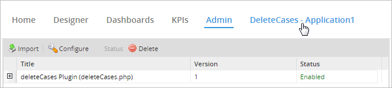
Take into consideration that only one top-level menu item can be created per plugin, so create multiple plugins for multiple top-level menus.
By default, clicking on this new menu item will direct the web browser to the address:
http://<IP-ADDRESS>:<PORT>/sys<WORKSPACE>/<LANG>/<SKIN>/<pluginName>/<pluginName>Application
For example:
http://www.example.com/sysworkflow/en/classic/deleteCases/deleteCasesApplication
When the browser is redirected, a list of users will be displayed:
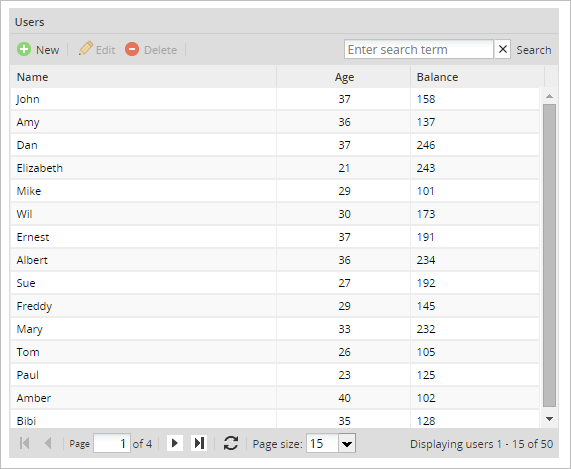
This page is generated by the following four files:
| File | Description |
| pluginName/pluginNameApplication.html | HTML code to display on the page, which is none in this case. |
| pluginName/pluginNameApplication.js | JavaScript code to execute, which in this case defines the table, its fields and its controls. |
| pluginName/pluginNameApplication.php | PHP code to be executed on the server side to publish the page. |
| pluginName/pluginNameApplicationAjax.php | PHP code to complete any AJAX requests that come from the page. |
Data generally comes from a database query, but in this sample page, all the names in the list come from an array in the pluginNameApplication.js file and the numbers are randomly generated.
Another new menu option will be added the top-level ProcessMaker menu, with code that is inserted in the plugins/pluginName/pluginName.php file.
The PMPlugin::registerMenu() method is used to register the new menu option. The first parameter is the name of the menu where the option will be added at the end. 'processmaker' is the main ProcessMaker menu. The second parameter is the name of the file that defines the new menu option, which should be located in the plugins/pluginName/pluginName/ directory.
For example:
$this->registerMenu("processmaker", "menudeleteCases.php");
}
The menupluginName.php file (which in this example is menudeleteCases.php) will be created to define the new menu option. The following code adds the new menu to the ProcessMaker main menu with the Menu::AddIDRawOption() method:
global $G_TMP_MENU;
$G_TMP_MENU->AddIdRawOption("ID_DELETECASES_MNU_01", "deleteCases/deleteCasesApplication", "deleteCases - application1");
?>
$G_TMP_MENU is a global variable that is an instance of the Menu class defined in gulliver/system/class.menu.php. The Menu::AddIdRawOption() method is used to add a new menu option to the $G_TMP_MENU global variable. The parameters of this method can be edited to define a different menu ID, execute a different file when the user clicks on the menu option, and/or change its text label.
For example, to make the menu option execute a custom code file located at /opt/plugins/deleteCases/deleteCases/manageCases.php and use the text label "Manage Cases" instead of "deleteCases - application1", change the code to:
$G_TMP_MENU->AddIdRawOption("ID_DELETECASES_MNU_01", "deleteCases/manageCases", "Manage Cases");
Embedding in an <iframe>
By default, the sample page will be displayed inside the principal window of the web browser. If the sample page should be displayed inside an <iframe> under the main ProcessMaker menu, then the plugin files need to be edited.
First, edit the $G_TMP_MENU->AddIdRawOption() function in the menupluginName.php file so that it executes a different code file when the user clicks on the menu item.
For example, change menudeleteCases.php file from:
global $G_TMP_MENU;
$G_TMP_MENU->AddIdRawOption("ID_DELETECASES_MNU_01", "deleteCases/deleteCasesApplication", "deleteCases - application1");
?>
To:
global $G_TMP_MENU;
$G_TMP_MENU->AddIdRawOption("ID_DELETECASES_MNU_01", "deleteCases/main", "deleteCases - application1");
?>
Then, create a file named main.php in the same directory with the following content:
$G_MAIN_MENU = 'processmaker';
$G_ID_MENU_SELECTED = 'ID_DELETECASES_MNU_01';
$G_PUBLISH = new Publisher;
$G_PUBLISH->AddContent('view', 'deleteCases/mainLoad');
G::RenderPage('publish');
?>
Finally, create another file named mainLoad.php in the same directory, with the following content:
Now, when the user clicks on the menu item, it will first load the main ProcessMaker menu, then create an <iframe> under the menu that displays the contents generated by the deleteCases/deleteCasesApplication* files.
New Options in the Cases Sidebar
To add several new options to the cases sidebar under the Home menu, enter "y" at the following question:
Entering "y" will cause the following 11 files to be created:
The file pluginName/menupluginName.php is created to define 3 new options to be added to the cases sidebar. In addition, code is inserted into pluginName/pluginName.php to register a new option in the cases sidebar with the PMPlugin::registerMenu() method. For example:
$this->registerMenu("cases", "menudeleteCases.php");
}
As of ProcessMaker 3.6.0, the code above is:
$this->registerMenu("home", "menudeleteHome.php");
}
A new option named "deleteCases application1" has been added above the inbox in the sidebar of the Home panel. When clicked, it displays the same list of users as the Example Page, but the page will be embedded in the casesSubFrame frame.
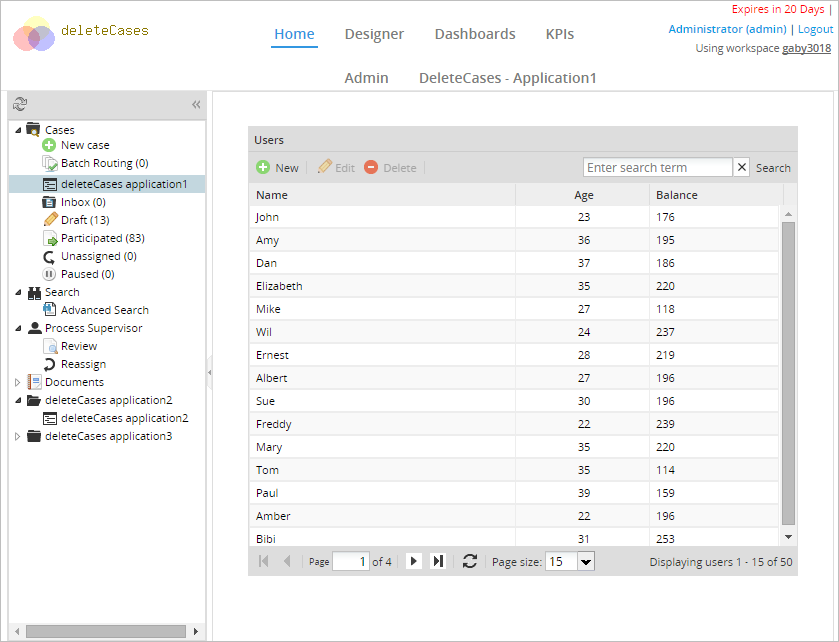
As of ProcessMaker 3.6.0, the result is something like:

A new header has also been added to the bottom of the sidebar named "deleteCases application2". Under that header is an item named "deleteCases application2", which displays the following page when clicked:
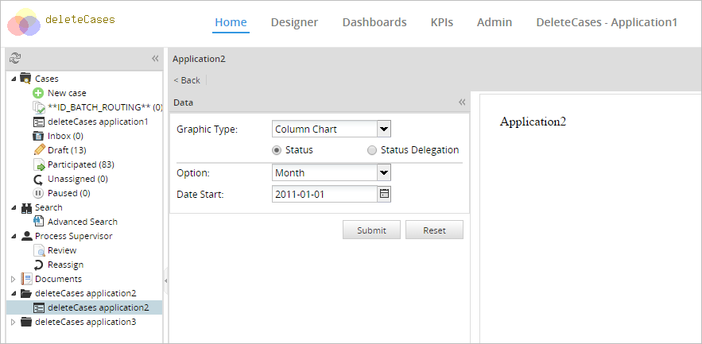
This page is generated with the following files:
- deleteCases/deleteCasesApplication2.php
- deleteCases/deleteCasesApplication2.html
- deleteCases/deleteCasesApplication2.js
Another header was also added to the sidebar named "deleteCases application3". Clicking on it displays a panel with the text "Content 3":
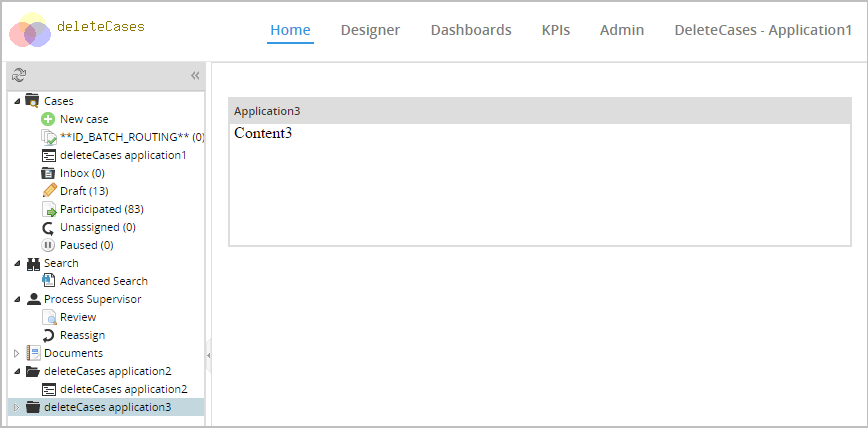
This page is created with the files:
- deleteCases/deleteCasesApplication3.php
- deleteCases/deleteCasesApplication3.html
- deleteCases/deleteCasesApplication3.js
New Role and Permission
To use ProcessMaker's role based access control (RBAC) so only users with the designated permission in their role will be able to access the plugin and its functionality, then enter "y" for the following option:
Entering "y" will add the following code to the pluginName.php file to generate a new role and permission:
$RBAC = RBAC::getSingleton() ;
$RBAC->initRBAC();
$roleData = array();
$roleData['ROL_UID'] = G::GenerateUniqueId();
$roleData['ROL_PARENT'] = '';
$roleData['ROL_SYSTEM'] = '00000000000000000000000000000002';
$roleData['ROL_CODE'] = 'PROCESSMAKER_pluginName';
$roleData['ROL_CREATE_DATE'] = date('Y-m-d H:i:s');
$roleData['ROL_UPDATE_DATE'] = date('Y-m-d H:i:s');
$roleData['ROL_STATUS'] = '1';
$RBAC->createRole ( $roleData );
$RBAC->createPermision ('PM_pluginName' );
}
Where:
$roleData['ROL_UID']: The unique ID of the new role.$roleData['ROL_PARENT']: It's outdated and should always be set to''(an empty string).$roleData['ROL_SYSTEM']: It should always be set to'00000000000000000000000000000002', which is the ID of the ProcessMaker system.$roleData['ROL_CODE']The name of the new role, which is set toPROCESSMAKER_pluginNamein upper case by default. The name can be changed, just make sure that it doesn't conflict with the names of any existing roles.$roleData['ROL_CREATE_DATE']: The date and time in the format"YYYY-MM-DD HH:MM:SS"when the plugin was created.$roleData['ROL_UPDATE_DATE']: The date and time in the format"YYYY-MM-DD HH:MM:SS"when the plugin was last updated.$roleData['ROL_STATUS']: Set to'1'to activate the new role and assign it to users. Otherwise, set to'0'if the new role shouldn't be assigned to users.$RBAC->createPermision ('PM_pluginName' ): Creates the name of the new permission, which is set toPM_pluginNamein upper case by default. It can be changed as long as it doesn't conflict with the names of any existing permissions.
Creating the New Role and Permission
The code in the install() function will be executed when the plugin is imported into ProcessMaker. Therefore, the new role and permission will only be created in ProcessMaker when the new plugin is imported.
First, use the gulliver pack-plugin script to create an exportable .tar file for the plugin to be imported. Then, go to ADMIN > Plugins > Plugin Manager. Click on the Import button and select the plugin's .tar file to import it. Even if the plugin already appears in the list of available plugins, import the plugin again so it will execute the install() function and create the new role and permission. Finally, activate the new plugin, and the new role and permission will be available in ProcessMaker.
Redirect After Login
If a new role and permission was created in the previous step, another option to redirect users with that role to a specified page after logging into ProcessMaker will be shown. To redirect, enter "y" at this option:
Entering "y" will add code like the following to the pluginName.php file:
$this->redirectLogin('PROCESSMAKER_DELETECASES', 'users/users_List');
}
By default, the plugin redirects to the user list, but this can be changed. For example, to redirect all users with the PROCESSMAKER_DELETECASES role to the deleteCases/deleteCasesApplication.php page on login use the following code:
External Step
Note: The External Step feature is not available for ProcessMaker Mobile as step: it will not open the case or create a case if the External Step is the first on the display list. This feature will be implemented in future versions.
To create a custom external step for tasks, similar to steps like Dynaforms, Input Documents and Output Documents, enter "y" at this option:
Note: The external step will appear as an available step in all processes in the workspace.
Entering "y" will add a file like the following:
This file will need to be edited to add the code to handle the external step. Code will also be added to the pluginName.php file, like the following:
$this->registerStep( '2194269554e95dacc74c6d2077314289', 'stepdeleteCasesApplication', 'deleteCases external step' );
}
The first parameter of the registerStep() method is the external step's unique ID number, which was automatically generated by ProcessMaker. The second parameter is the name of the file(s) (without the extension) that will be executed when running the step. The third parameter is the name of the external step that is displayed to the user in ProcessMaker. Feel free to edit the external step's name.
The following files will be added to the plugin:
- pluginName/steppluginNameApplicationAjax.php: Defines custom functions built by the user, which can be invoked from the steppluginNameApplication.php file.
- pluginName/steppluginNameApplication.html: Defines the HTML code for the external step. By default, just defines an empty div with the id "{$form_id}".
- pluginName/steppluginNameApplication.js: Gives the external step the functionality to hide or show fields using JavaScript code.
- pluginName/steppluginNameApplication.php: Contains code to invoke the functions of the steppluginNameApplicationAjax.php file and to call functions of the ProcessMaker core.
When a case is executed with an external step, these files will display the following table of system variables from the case:
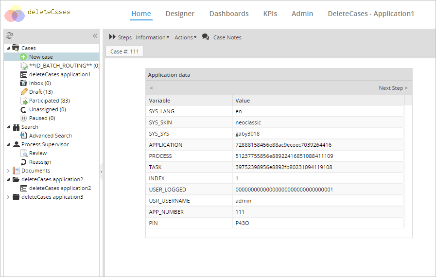
Adding an External Step to a Process
After importing and activating a plugin with an external step, the external step can be assigned as a step in a task.
Go to the DESIGNER and open a process for editing. Then, right click on a task in the process and select Steps from the dropdown menu. Locate the External(s) option where the "deleteCases" external step will be found. The external step created by the plugin should appear in the list of available steps. Drag and drop the "deleteCases external step" from the Available Elements section to the Assigned Elements section as seen in the image below.
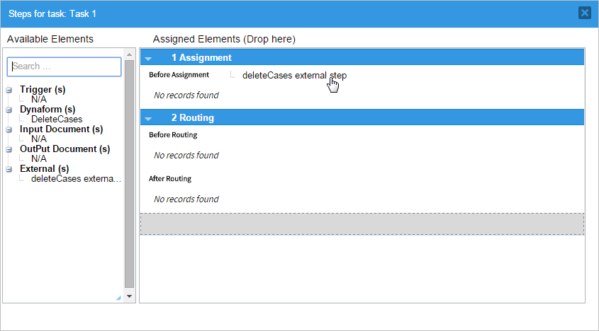
Once the external step is dropped into the Assigned Elements section it should now appear in the list of steps added to the task.
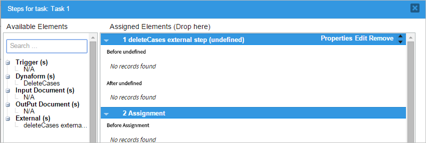
Now the external step will be executed at this task when a case is executed.
Editing External Steps
The default external step files created by the gulliver new-plugin script can be edited to add custom content. It is important that the external step page contains links or buttons to go to the previous and next steps.
If using Ext JS to generate the page, the following JavaScript code can be used to create a previous step button in an Ext JS toolbar:
text: " < " + CONFIG.previousStepLabel + " ",
handler: function() {
window.location.href = CONFIG.previousStep;
}
})
Likewise, the following JavaScript code can be used to create a next step button in an Ext JS toolbar:
text: " " + CONFIG.nextStepLabel + " > ",
handler: function() {
window.location.href = CONFIG.nextStep;
}
})
In order for these links to have the proper URL and label, the CONFIG variable needs to be passed to the JavaScript file with the HeadPublisher::Assign() method in the PHP file.
By default, the gulliver new-plugin script creates the steppluginNameApplication.php file to set the URLs and labels for the "Previous Step" and "Next Step" links:
For example, the stepdeleteCasesApplication.php file contains:
try {
global $Fields;
$oHeadPublisher = &headPublisher::getSingleton();
//SYS_SYS //Workspace name
//PROCESS //Process UID
//APPLICATION //Case UID
//INDEX //Number delegation
$config = array();
$config["previousStep"] = $Fields["APP_DATA"]["__DYNAFORM_OPTIONS"]["PREVIOUS_STEP"];
$config["previousStepLabel"] = $Fields["APP_DATA"]["__DYNAFORM_OPTIONS"]["PREVIOUS_STEP_LABEL"];
$config["nextStep"] = $Fields["APP_DATA"]["__DYNAFORM_OPTIONS"]["NEXT_STEP"];
$config["nextStepLabel"] = $Fields["APP_DATA"]["__DYNAFORM_OPTIONS"]["NEXT_STEP_LABEL"];
$oHeadPublisher->addContent("extstep/stepextstepApplication"); //Adding a html file .html.
$oHeadPublisher->addExtJsScript("extstep/stepextstepApplication", false); //Adding a javascript file .js
$oHeadPublisher->assign("CONFIG", $config);
G::RenderPage("publish", "extJs");
exit(0);
} catch (Exception $e) {
echo $e->getMessage();
exit(0);
}
?>
Dashlet for the Dashboard
To create a custom dashlet that will be added to the Dashboard, enter "y" at this option:
Entering "y" will create two additional files in the plugin like the following:
Inside the plugins/pluginName/pluginName.php file, the following lines will be added to the pluginNamePlugin class:
{
private $dashletsUids;
public function deleteCasesPlugin($sNamespace, $sFilename = null)
{
...
$this->dashletsUids = array(
array("DAS_UID" => "7381091625893a2c9a9eac8089244259",
"DAS_CLASS" => "dashletdeleteCases",
"DAS_TITLE" => "Dashlet deleteCases",
"DAS_DESCRIPTION" => "Dashlet deleteCases",
"DAS_VERSION" => "1.0",
"DAS_CREATE_DATE" => date("Y-m-d"),
"DAS_UPDATE_DATE" => date("Y-m-d"))
);
...
}
To change the title and description of the new dashlet, edit the values of the "DAS_TITLE" and "DAS_DESCRIPTION" keys in the dashletsUids array.
Code to control the new dashlet is located in the file plugins/pluginName/pluginName/classes/class.dashletpluginName.php and a template for the content of the new dashlet is located in the file plugins/pluginName/pluginName/views/dashletpluginName.html. Edit these two files to modify the dashlet or simply add content to the public_html directory and change the code to use that content.
To display tables or graphs based on case data, it is recommended to export the case data in Report Tables, so it can be more easily queried. To display information in the dashlet about cases, query the wf_workspace.APPLICATION table in the database to get a list of cases and the wf_workspace.APP_CACHE_VIEW table to get a list of the tasks that have been assigned to the users in each case.
PMFunction Class
The last option sets the configuration, classes, and additional functions for the plugin:
Regardless of entering "y" or "n", the following files will be created:
The pluginName.php file defines a class for the plugin named pluginNamePlugin, which is based upon the PmPlugin class defined in workflow/engine/classes/class.plugin.php. This class sets up the plugin and registers it in ProcessMaker. The contents of the setup() and install() methods depend on which of the previous options were selected, but at a minimum this file contains code similar to the following:
G::LoadClass('plugin');
class deleteCasesPlugin extends PMPlugin
{
function deleteCasesPlugin($sNamespace, $sFilename = null) {
$res = parent::PMPlugin($sNamespace, $sFilename);
$this->sFriendlyName = 'deleteCases Plugin';
$this->sDescription = 'Autogenerated plugin for class deleteCases';
$this->sPluginFolder = 'deleteCases';
$this->sSetupPage = 'deleteCases';
$this->iVersion = 0.78;
//$this->iPMVersion = 2425;
$this->aWorkspaces = null;
//$this->aWorkspaces = array('os');
return $res;
}
function setup() {
}
function install() {
}
}
$oPluginRegistry =& PMPluginRegistry::getSingleton();
$oPluginRegistry->registerPlugin('deleteCases', __FILE__);
PMPlugin Class Methods
The custom pluginNamePlugin class inherits a number of class methods from its parent PmPlugin class. If these methods aren't redefined in pluginNamePlugin, then the default methods from PmPlugin will be used.
It may be useful to redefine the following methods:
setup(): This method is automatically executed by workflow/public_html/sysGeneric.php, which is called when a ProcessMaker page is loaded.setup()will be executed almost every time a user clicks on the ProcessMaker interface, so add code that will be executed with every user interaction. However, remember that the code could potentially slow down ProcessMaker, so avoid code that waits for responses from remote servers. If that kind of code is necessary, it is a good idea to implement it as a code file, which is called only when the plugin is used.install():This method is called when the plugin is installed, i.e., when the plugin is imported into processMaker by going to ADMIN > Plugins and clicking on Import.enable():This method is called when the plugin is enabled, i.e., when going to ADMIN > Plugins > Plugin Manager, selecting the plugin and clicking on Enable.disable():This method is called when the plugin is disabled, i.e., when going to ADMIN > Plugins > Plugin Manager, selecting the plugin and clicking on Disable.uninstall():This method is called when the plugin is uninstalled. Note that recent versions of ProcessMaker no longer have a Remove button to uninstall plugins so this method will never be called through the interface.
To define custom versions of these class methods, add them to the definition of the pluginNamePlugin class:
...
public function setup() {
//add code here
}
public function install() {
//add code here
}
public function enable() {
//add code here
}
public function disable() {
//add code here
}
public function uninstall() {
//add code here
}
}
The pluginNameClass Class
The pluginName/class.pluginName.php file defines the pluginNameClass class, which is also based upon the PmPlugin class. The content of its methods also depends upon the previously selected options, but at a minimum it contains a private __construct() method that is called whenever a class instance is created, and a private setup() method that is called when a page is loaded in ProcessMaker.
For example:
/**
* class.deleteCases.php
*
*/
class deleteCasesClass extends PMPlugin {
function __construct ( ) {
set_include_path(
PATH_PLUGINS . 'noOptions' . PATH_SEPARATOR .
get_include_path()
);
}
function setup()
{
}
}
Custom methods and member variables can be added to the pluginNameClass class. The inherited methods from PmPlugin can also be defined in the pluginNameClass class.
Custom pmFunctions
If "y" was entered, then in addition to the files above, the following file will also be created:
The pluginName/classes/class.pmFunctions.php file is used to define any special functions for the plugin, which can be called from inside a trigger like normal ProcessMaker Functions. These custom functions can be given any name, but the convention is to use names like pluginName_function-name(), so they can easily be distinguished from the standard ProcessMaker and PHP functions used in triggers.
By default, the class.pmFunctions.php file contains two sample functions named pluginName_getMyCurrentDate() and pluginName_getMyCurrentTime() to return the current date and current time.
For example:
/**
* class.deleteCases.pmFunctions.php
*
* ProcessMaker Open Source Edition
* Copyright (C) 2004 - 2008 Colosa Inc.
* *
*/
////////////////////////////////////////////////////
// deleteCases PM Functions
//
// Copyright (C) 2007 COLOSA
//
// License: LGPL, see LICENSE
////////////////////////////////////////////////////
function deleteCases_getMyCurrentDate()
{
return G::CurDate('Y-m-d');
}
function deleteCases_getMyCurrentTime()
{
return G::CurDate('H:i:s');
}
New custom functions can be added. For example, to add a custom function named deleteCases_getCaseStatus() to return the status of a case:
$c = new Cases();
$aInfo = $c->loadCase($caseId);
return $aInfo['APP_STATUS'];
}
As long as the plugin is activated, the deleteCases_getCaseStatus() function can be called in a ProcessMaker trigger. For example:
$subject = 'Finish up the case';
} elseif (deleteCases_getCaseStatus(@@APPLICATION) == 'DRAFT') {
$subject = 'Start working on the case';
}
PMFSendMessage(@@APPLICATION, 'boss@example.com', 'employee1@example.com', '', '', $title, 'overdueCase.html');
When the plugin is created, the following code is automatically added to the pluginName.php file to incorporate the plugin's custom functions into ProcessMaker:
$this->registerPmFunction();
}
Step 4: Linking the Plugin Files into ProcessMaker
After using the gulliver new-plugin script to create the new plugin, create symbolic links from the plugin's PHP file and its directory to the <INSTALL-DIRECTORY>/workflow/engine/plugins/ directory so the new plugin can be used by ProcessMaker.
For example:
ln -s /opt/plugins/deleteCases/deleteCases /opt/processmaker/workflow/engine/plugins/
Creating symbolic links is the recommended way, but another way to make the plugin available to ProcessMaker is to copy its files directly into ProcessMaker's plugin directory.
For example:
Step 5: Activate the New Plugin
After linking or copying the plugin's files into the ProcessMaker file system, log in to ProcessMaker as the admin user (or another user with the PM_SETUP_ADVANCE permission in his/her role). Go to ADMIN > Plugins > Plugins Manager and select the new plugin, which should appear in the list. Then, click on the Enable button to activate the plugin. The new plugin should now be ready to be used. To see any new changes to the interface (such as new menus), refresh the web browser.
Note: Each time the menu is changed in the plugin's files, the plugin will need to be deactivated and then reactivated for those changes to appear in the ProcessMaker interface.
Altering the Database Structure
Plugins can be used to alter the structure of the database(s) used by ProcessMaker. To add tables and/or fields to a database, complete these steps in order:
- Edit the Propel XML schema file(s) to define the additional tables and/or fields.
- Run the gulliver propel-build-model script to construct Propel classes for the data objects.
- Run the gulliver propel-build-sql script to generate the SQL files to alter the database.
- Run the
gulliver propel-build-crudfor each table to update the database.
Editing the Propel XML Schema File
Changes are made to the ProcessMaker database(s) through the XML schema file located at plugins/pluginName/pluginName/config/schema.xml, which is generated by the gulliver new-plugin script.
Edit the schema.xml file to add the tables and fields used by the plugin. By default, it contains:
<!--Autogenerated by CreoleToXMLSchema!-->
<database name="workflow">
<table name="PLUGIN_DEMO">
<vendor type="mysql">
<parameter name="Name" value="PLUGIN_DEMO"/>
<parameter name="Engine" value="MyISAM"/>
<parameter name="Version" value="10"/>
<parameter name="Row_format" value="Dynamic"/>
<parameter name="Auto_increment" value=""/>
<parameter name="Collation" value="utf8_general_ci"/>
<parameter name="Create_options" value=""/>
<parameter name="Comment" value="The plugin demo table for deleteCases"/>
</vendor>
<column name="PLG_UID" type="VARCHAR" size="32" required="true" primaryKey="true" default="">
<vendor type="mysql">
<parameter name="Field" value="PLG_UID"/>
<parameter name="Type" value="varchar(32)"/>
<parameter name="Null" value="NO"/>
<parameter name="Key" value="PRI"/>
<parameter name="Default" value=""/>
<parameter name="Extra" value=""/>
</vendor>
</column>
<column name="PLG_PARENT_ID" type="INTEGER" required="true" default="0">
<vendor type="mysql">
<parameter name="Field" value="PLG_PARENT_ID"/>
<parameter name="Type" value="int(11)"/>
<parameter name="Null" value="NO"/>
<parameter name="Key" value=""/>
<parameter name="Default" value="0"/>
<parameter name="Extra" value=""/>
</vendor>
</column>
<column name="PLG_NAME" type="VARCHAR" size="100" required="true" default="">
<vendor type="mysql">
<parameter name="Field" value="PLG_FOLDER_NAME"/>
<parameter name="Type" value="varchar(100)"/>
<parameter name="Null" value="NO"/>
<parameter name="Key" value=""/>
<parameter name="Default" value=""/>
<parameter name="Extra" value=""/>
</vendor>
</column>
<column name="PLG_FULL_PATH" type="VARCHAR" size="255" required="true" default="">
<vendor type="mysql">
<parameter name="Field" value="PLG_FULL_PATH"/>
<parameter name="Type" value="varchar(255)"/>
<parameter name="Null" value="NO"/>
<parameter name="Key" value=""/>
<parameter name="Default" value=""/>
<parameter name="Extra" value=""/>
</vendor>
</column>
<index name="indexApp">
<index-column name="PLG_UID"/>
<vendor type="mysql">
<parameter name="Table" value="PLUGU"/>
<parameter name="Non_unique" value="1"/>
<parameter name="Key_name" value="indexApp"/>
<parameter name="Seq_in_index" value="1"/>
<parameter name="Column_name" value="PLUGIN_DEMO"/>
<parameter name="Collation" value="A"/>
<parameter name="Cardinality" value="6"/>
<parameter name="Sub_part" value=""/>
<parameter name="Packed" value=""/>
<parameter name="Null" value=""/>
<parameter name="Index_type" value="BTREE"/>
<parameter name="Comment" value=""/>
</vendor>
</index>
</table>
</database>
To add tables and/or fields to a database, first indicate which database they should be added to in the <database name="DB-NAME"> tag. The DB-NAME is one of the databases used by the current workspace:
"workflow": Thewf_<WORKSPACE>database"rbac": Therb_<WORKSPACE>database"report": Therp_<WORKSPACE>database
The <table name="TABLE-NAME"> tag is used to indicate the name of the table to be modified. The "TABLE-NAME" can either be a new table or an existing table in the database. Remember that MySQL table names are case sensitive by default in Linux/UNIX, but not in Windows. To make a cross-platform plugin, it is recommended to put table names and field names in UPPER CASE. Make sure that the same TABLE-NAME is used in the tag: <parameter name="Name" value="TABLE-NAME"/>
Fields in each table are defined with the <column name="FIELD-NAME"> tag. The properties of each field can be defined inside the <column name="FIELD-NAME" PROPERTIES/> or through separate <parameter name="PROPERTY-NAME" value="PROPERTY-VALUE"/> tags.
For example, this XML code:
Creates the same "PLG_UID" field as this XML code:
<vendor type="mysql">
<parameter name="Field" value="PLG_UID"/>
<parameter name="Type" value="varchar(32)"/>
<parameter name="Null" value="NO"/>
<parameter name="Key" value="PRI"/>
<parameter name="Default" value=""/>
<parameter name="Extra" value=""/>
</vendor>s
</column>
Note that the first definition uses Propel's universal properties, which are valid for all types of databases, whereas the second example uses properties that are specific to MySQL. This same "PLG_UID" field can be created using both forms of the properties:
<vendor type="mysql">
<parameter name="Field" value="PLG_UID"/>
<parameter name="Type" value="varchar(32)"/>
<parameter name="Null" value="NO"/>
<parameter name="Key" value="PRI"/>
<parameter name="Default" value=""/>
<parameter name="Extra" value=""/>
</vendor>
The sample schema.xml file created by the gulliver new-plugin script duplicates the definition of each field property using both universal and MySQL properties, but that duplication is unnecessary and is not recommended. The same sample file can be written in a shorter form, such as:
<!--Autogenerated by CreoleToXMLSchema!-->
<database name="workflow">
<table name="PLUGIN_DEMO">
<vendor type="mysql">
<parameter name="Name" value="PLUGIN_DEMO"/>
<parameter name="Engine" value="MyISAM"/>
<parameter name="Version" value="10"/>
<parameter name="Row_format" value="Dynamic"/>
<parameter name="Auto_increment" value=""/>
<parameter name="Collation" value="utf8_general_ci"/>
<parameter name="Create_options" value=""/>
<parameter name="Comment" value="The plugin demo table for deleteCases"/>
</vendor>
<column name="PLG_UID" type="VARCHAR" size="32" required="true" primaryKey="true" DEFAULT="" />
<column name="PLG_PARENT_ID" type="INTEGER" required="true" DEFAULT="0" />
<column name="PLG_NAME" type="VARCHAR" size="100" required="true" DEFAULT="" />
<column name="PLG_FULL_PATH" type="VARCHAR" size="255" required="true" DEFAULT="" />
<index name="indexApp">
<index-column name="PLG_UID"/>
<vendor type="mysql">
<parameter name="Table" value="PLUGU"/>
<parameter name="Non_unique" value="1"/>
<parameter name="Key_name" value="indexApp"/>
<parameter name="Seq_in_index" value="1"/>
<parameter name="Column_name" value="PLUGIN_DEMO"/>
<parameter name="Collation" value="A"/>
<parameter name="Cardinality" value="6"/>
<parameter name="Sub_part" value=""/>
<parameter name="Packed" value=""/>
<parameter name="Null" value=""/>
<parameter name="Index_type" value="BTREE"/>
<parameter name="Comment" value=""/>
</vendor>
</index>
</table>
</database>
For more information about Propel XML schema files, see the Propel Manual. For more examples of XML schema files, see the following files that define the <wf_<WORKSPACE> and rp_<WORKSPACE> databases in ProcessMaker:
- <INSTALL-DIRECTORY>/rbac/engine/config/schema.xml
- <INSTALL-DIRECTORY>/workflow/engine/config/schema.xml
Creating Classes with gulliver propel-build-model
After editing the config/schema.xml file, run the following script to generate the Propel classes for the tables defined in the schema file:
For example:
>> propel.ini using the file : plugins/deleteCases/config/propel.ini
Buildfile: /opt/processmaker/gulliver/thirdparty/propel-generator/build.xml
[resolvepath] Resolved /opt/processmaker/workflow/engine/plugins/deleteCases/config to /opt/pm2033/workflow/engine/plugins/deleteCases/config
propel-project-builder > check-project-or-dir-set:
propel-project-builder > check-project-set:
propel-project-builder > set-project-dir:
propel-project-builder > check-buildprops-exists:
propel-project-builder > check-buildprops-for-propel-gen:
propel-project-builder > check-buildprops:
propel-project-builder > configure:
[echo] Loading project-specific props from /opt/processmaker/workflow/engine/plugins/deleteCases/config/propel.ini
[property] Loading /opt/processmaker/workflow/engine/plugins/deleteCases/config/propel.ini
propel-project-builder > om:
[phing] Calling Buildfile '/opt/processmaker/gulliver/thirdparty/propel-generator/build-propel.xml' with target 'om'
[property] Loading /opt/processmaker/gulliver/thirdparty/propel-generator/./default.properties
propel > check-run-only-on-schema-change:
propel > om-check:
propel > om:
[echo] +------------------------------------------+
[echo] | |
[echo] | Generating Peer-based Object Model for |
[echo] | YOUR Propel project! (NEW OM BUILDERS)! |
[echo] | |
[echo] +------------------------------------------+
[phingcall] Calling Buildfile '/opt/processmaker/gulliver/thirdparty/propel-generator/build-propel.xml' with target 'om-template'
[property] Loading /opt/processmaker/gulliver/thirdparty/propel-generator/./default.properties
propel > om-template:
[propel-om] Target database type: mysql
[propel-om] Target package: classes.model
[propel-om] Using template path: /opt/processmaker/gulliver/thirdparty/propel-generator/templates
[propel-om] Output directory: /opt/processmaker/workflow/engine/plugins/deleteCases
[propel-om] Processing: schema.xml
[propel-om] Processing Datamodel : JoinedDataModel
[propel-om] - processing database : workflow
[propel-om] + PLUGIN_DEMO
[propel-om] -> BasePluginDemoPeer [builder: PHP5ComplexPeerBuilder]
[propel-om] -> BasePluginDemo [builder: PHP5ComplexObjectBuilder]
[propel-om] -> PluginDemoMapBuilder [builder: PHP5MapBuilderBuilder]
[propel-om] -> (exists) PluginDemoPeer
[propel-om] -> (exists) PluginDemo
BUILD FINISHED
Total time: 0.2184 seconds
Note: As of ProcessMaker 3.2.2, the build result varies because the thirdparty folder is no longer part of the gulliver folder.
The propel-build-model script will add the following files to the plugin:
+-- config
| +-- schema-transformed.xml
+-- classes
+-- model
+-- map
¦ +-- TableNameMapBuilder.php
+-- om
¦ +-- BaseTableNamePeer.php
¦ +-- BaseTableName.php
+-- TableNamePeer.php
+-- TableName.php
Note: Gulliver propel-build-model script needs to have the XSL module installed in PHP for XSLT parsing. Otherwise, the following error message will appear:
To install the XSL module:
In Debian/Ubuntu:
In Red Hat/CentOS/Fedora:
Creating SQL Files with gulliver propel-build-sql
After generating the Propel classes, create the SQL files that will insert new tables/files into the database:
The <db-type> will be "mysql", since ProcessMaker runs on a MySQL database. For example, to generate the SQL files for the "deleteCases" plugin:
Applying Changes With gulliver propel-build-crud
After generating the SQL files, apply the database changes to each new or altered table:
Step 6: Creating Exportable Plugins
After creating the new plugin, use the gulliver pack-plugin script to pack the plugin files into a tar archive that can be exported.
Using the gulliver pack-plugin Script
From the command line, log in as the root user or any user with rights to the plugins directory. Then, change to the workflow/engine directory and execute the gulliver pack-plugin script.
Remember that the pluginName is case sensitive and needs to be spelled exactly the same as the plugin's directory.
For example, to create an export file for the deleteCases plugin:
The .tar file created by the gulliver pack-plugin script will be named NAME-VERSION.tar and will be located in the plugins/pluginName directory. If the tar file already exists, it will automatically be overwritten.
php pack-plugin pluginName takes the files from the /opt/plugins/pluginName directory when creating the /opt/plugins/pluginName/pluginName-X.tar file. If the plugin files were copied (not symbolically linked) into the /opt/processmaker/workflow/engine/plugins directory, then the plugins's .tar file will have to be manually created with the following commands:
Then, copy the plugin's .tar file to the local computer. If working on a remote server, then scp in Linux/UNIX or pscp in Windows can be used to copy the .tar file to the local computer.
For example in Linux/UNIX:
Importing a Plugin
After using the gulliver pack-plugin script to create a tar file for the plugin, log in to ProcessMaker as a user, such as the admin, who has the PM_SETUP_ADVANCE permission in his/her role.
Go to ADMIN > Plugins and click on the Import button. Select the plugin's tar file and click on Import to upload and install the new plugin in ProcessMaker.
The new plugin should appear in the list in the Plugins Manager. Then, activate the new plugin to use it.
Note: Importing a plugin that already exists in ProcessMaker will overwrite the existing plugin. This is the proper way to upgrade plugins that already exist in ProcessMaker.
Create Custom Menu Icons
Available Version: As of ProcessMaker 3.6.0
To have visual descriptive menus, add icons next to the menu name. Due to the Vue.js framework, there are two ways to add icons to the custom left menus.
- By configuring each menu function of the plugin file.
- By creating a new setting file where is using the
AddIdRawOption()function.
Warning: For both methods, ProcessMaker does not support:
Remember to add icons before to package the plugin.
Add Icons Through the Plugin File
This method involves the following:
- Select the menus order by setting the Index value.
- Similar view as in previous versions to ProcessMaker 3.6.0 with groups and subgroups.
Follow the next steps to add icons:
The icons supported are the Font Awesome. Go to this page.

Click a selected font. Font details display.
Copy the
i classvalue for the font to use as a custom icon.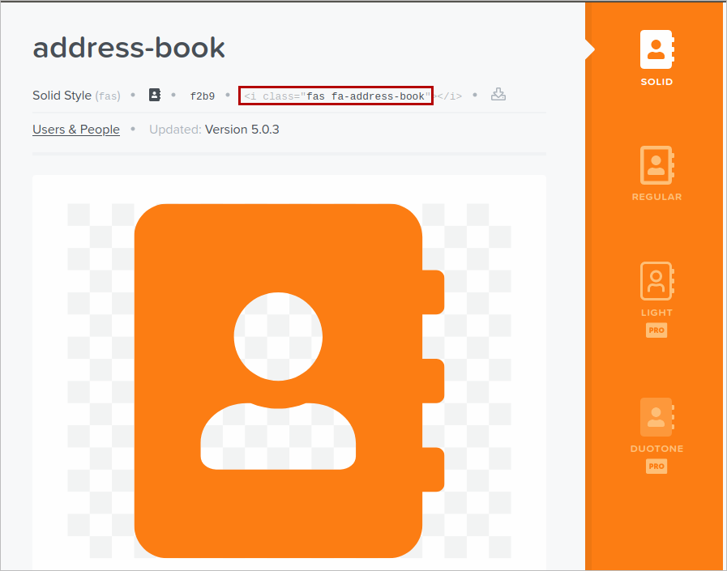
Go to the plugin directory /opt/plugins/testPlugin/testPlugin.
Open the menuCasestestPlugin.php file, which was created for the Home left menu.
nano menuCasestestPlugin.php For each menu function, in the
$tmpIcons, replace the null value by the copied value in the step 3.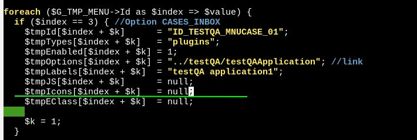
Using the
$indexsetting, select the menus order in the left menu.To correctly enable and disable plugin, clean the cache or open and close the web browser.

Add Icons Through the AddIdRawOption() Function
For this method, take into account the following:
- It does not support the menus order. Plugin menus and icons locate at the end of the left sidebar by default.
- The menu display asterisks preceding and after the plugin name.
- Vertical scroll displays in the menu.
- The menu with
blockHeaderdoes not display as a folder.
Follow the next steps to add icons:
In the plugin directory /opt/plugins/testPlugin/testPlugin, create the
menuHome.phpfile by running the commandnano menuHome.In the new file copy the following code that the
menuCasestestQA.phpfile uses to replace the default icons with those for the custom plugin:AddIdRawOption('ID_TESTQA_MNUCASE_01', '../testQA/testQAApplication', G::LoadTranslationPlugin('plugins', 'NH1 - testQA application1'), 'fas fa-user', '', ''); $G_TMP_MENU->AddIdRawOption('ID_TESTQA_MNUCASE_02', null, G::LoadTranslationPlugin('blockHeader', 'NH2 - testQA application2'), 'fas fa-camera', '', ''); $G_TMP_MENU->AddIdRawOption('ID_TESTQA_MNUCASE_03', '../testQA/testQAApplication2', G::LoadTranslationPlugin('plugins', 'NH3 - testQA application2'), 'fab fa-font-awesome', '', ''); $G_TMP_MENU->AddIdRawOption('ID_TESTQA_MNUCASE_04', '../testQA/testKarlApplication3', G::LoadTranslationPlugin('blockHeaderNoChild', 'NH4 - testQA application3'), 'fas fa-air-freshener', '', ''); In the plugin file
testQA.phpadd the following line to register the main menu Home:$this->registerMenu("home", "menuHome.php"); Pack the plugin as in Creating Exportable Plugins.
Creating Custom Pages
In ProcessMaker 3.0, either Gulliver + XML->HTML + Maborak or Gulliver + HTML + Ext JS can be used to generate custom pages in plugins. Gulliver is a custom PHP framework and Maborak is a custom JavaScript library used by ProcessMaker.
Ext JS generates very nice interface objects and is very flexible; however, it is more difficult to generate a basic page using Gulliver + HTML + Ext JS. In contrast, it is much easier to generate basic pages using Gulliver + XML->HTML + Maborak. Unfortunately, the Maborak framework is not documented, hard to understand, and not very flexible. It generates simpler interfaces compared to Ext JS. Nonetheless, it is much easier to create pages using Gulliver + XML->HTML + Maborak, because the same XML used to create Dynaforms can be used to create custom pages for a plugin.
Custom Pages with HTML + Ext JS
To create a custom page using Gulliver + HTML + Ext JS, create the following five files:
- A PHP Page Setup file: Sets the HTML and JavaScript files for the custom page, passes variables to the JavaScript, and then renders the page.
- A HTML Template file: Sets the HTML content of the page. If using Ext JS to generate the interface items, this often is just an HTML page with an empty
<div>that serves as a container for the HTML generated by Ext JS. - An Ext JS code file: Generates the content for the custom page, such as toolbars, buttons, links, fields and labels.
- A PHP AJAX file: Handles the submission of forms from the page and any AJAX calls.
- A PHP Menu file: Creates a menu item that displays the custom page when clicked.
PHP Page Setup
To setup a custom page to be displayed using Gulliver + HTML + Ext JS, create a PHP file that does the following steps:
- First, get a single instance of the [class|headPublisher] class using the headPublisher::getSingleton() method. Remember that the Gulliver framework should only use a single instance of the headPublisher (or Publisher class for displaying pages.
- Then, use the headPublisher::addContent() method to add one or more HTML files to the next page that will be displayed.
- Then, use the headPublisher::addExtJsScript() method to add one or more JavaScript files to be executed when the HTML files are loaded. The Ext JS library is used to create interface items, forms and fields that will be inserted in the HTML code.
- Then, use the headPublisher::assign() method to set JavaScript variables, which can be used by the JavaScript code to generate content in the HTML. For example, links, labels and the values in fields can be passed to the JavaScript.
- Finally, call G::RenderPage() to generate the content of the next page and display it.
Creating a cron Using ProcessMaker Classes
To create a cron using ProcessMaker classes, first create a PHP file by following the steps below:
- First create the PHP file, for example Plugin_File_Name.php inside the services folder.
- Then, add the following code:
class Plugin_File_NameClassCron
{
/**
* Default Constructor for the class
*/
function __construct ( ) {
}
function executeCron(){
if (!defined('PATH_WORKSPACE')) {
define('PATH_WORKSPACE', PATH_DATA_SITE);
set_include_path(get_include_path() . PATH_SEPARATOR . PATH_DATA_SITE);
}
if(SYS_SYS == "workflow" || SYS_SYS == "my_workspace"){ //execute the cron depending on the workspaces defined
$pluginFile="";
if (!class_exists('classPlugin_File_Name')){
$pluginFile = PATH_PLUGINS.'myproject'.PATH_SEP.'services'.PATH_SEP.'class.Plugin_File_Name.php';
}
if(file_exists($pluginFile)){
G::LoadClass('plugin');
require_once($pluginFile);
// the automated task is check and recreate the dimension tables
$plugin = new myClass(); //define the class with the name of the file where the actions will be executed by the cron
$plugin->followUpActions();
}
}
}
}
- Then, create a different PHP file, myClass.php, where the code that will be executed by the cron will be introduced. Actions the code might do include sending emails, starting cases automatically, assigning permissions, etc.
class myClass
{
public $workspace = SYS_SYS;
function followUpActions()
{
//CODE
}
}
Extending the ProcessMaker REST API
Extend the REST API in ProcessMaker by changing the code inside the deleteCases.php file. Take into consideration that when a plugin is created there are two files, which include:
- A folder (deleteCases)
- A php extension file (deleteCases.php)
Remember that the deleteCases.php file is critically involved when introducing modifications into the plugin. Both files have the same name of the plugin created. Open deleteCases.php in an editor. Observe the image below for guidance.
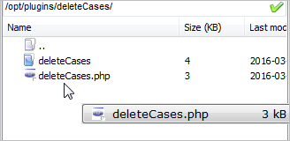
After the editor has been opened in any remote control program (for example Mobaxterm) the following script must be added:
Add the script in the public function enable() section and paste it after the following code:
Save the file and close it.

Now, go into the deleteCases plugin directory:
# /opt/plugins/deleteCases
+-- plugins/
+-- deleteCases/
Inside deleteCases proceed to create the following new directories:
+-- Services/
+-- Api
+-- DeleteCases
Note: Take into consideration that the DeleteCases folder refers to the name of the plugin. This name must have the first letter in uppercase, for example "PluginName".
Then, inside Delete Cases create a file named "Sample.php". The final result of the structure created is the following:
+-- plugins/
+-- deleteCases/
+-- src/
+-- Services/
+-- Api/
+-- DeleteCases/
+-- Sample.php
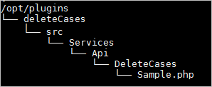
The created Sample.php file will look like the image below:
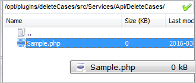
Once this file has been created in the new directory, edit the file and add the following code:
use Luracast\Restler\RestException;
use ProcessMaker\Services\Api;
use \ProcessMaker\Util;
/**
* @protected
*/
class Sample extends Api
{
/**
* @url GET /sample/hello/:var
*/
public function hello($var)
{
return array("response"=>"hi ".$var);
}
}
Observe the image below for guidance:
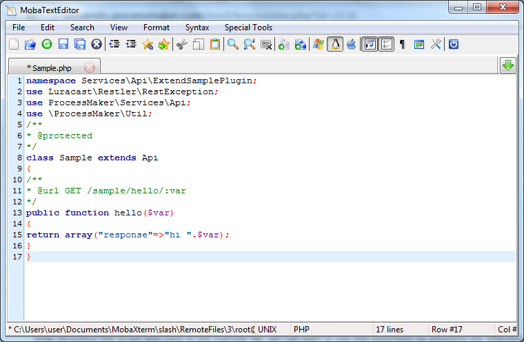
After including the script, save the Sample.php file and start using this extension by enabling the plugin being used in ProcessMaker.
For more information, see Creating New REST Endpoints.Consuming an API Endpoint
After extending the REST API in ProcessMaker it can be consumed by an endpoint. This endpoint, which is a unique URL representing an object, can be tested by using the Postman extension in Chrome. This test will be a response test of the working endpoint, which is a message in this case. To obtain this message an "access_token" must be obtained and with that token the message will be able to be seen. First of all, to call any ProcessMaker Endpoint, the external application needs to be registered in OAuth to obtain the "Client ID" and the "Client Secret".
After getting the access token, go to the Headers tab in Postman and copy the token number next to the Bearer as seen in the image.
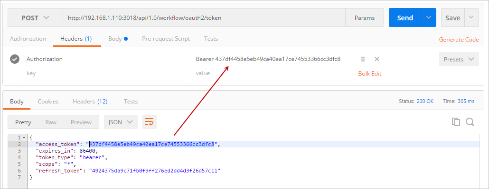
Change "POST" to "GET" in the dropdown and change the URL field to obtain the message from the Sample.php file. The URL must have the following structure: http://{ProcessMaker-Server}/api/1.0/{workspace}/{PluginName}/{class}/{function}/{var}
This will work with the code in the Sample.php file, which contains the following code:
namespace Services\Api\DeleteCases;
use Luracast\Restler\RestException;
use ProcessMaker\Services\Api;
use \ProcessMaker\Util;
/**
* @protected
*/
class Sample extends Api
{
/**
* @url GET /sample/hello/:var
*/
public function hello($var)
{
return array("response"=>"hi ".$var);
}
}
The image below shows an example of how the URL must be constructed:
http://{ProcessMaker-Server}/api/1.0/workflow/plugin-deleteCases/sample/hello/john
Where:
- Sample: The PHP class to be called.
- Hello: A method inside this class.
- John: The input variable ($var) sent to this method.
Finally, click on Send to receive the message intended as seen in the image below.
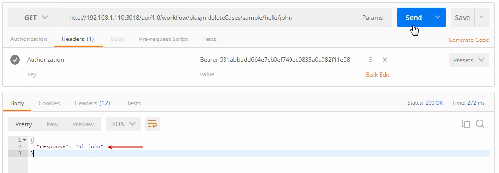